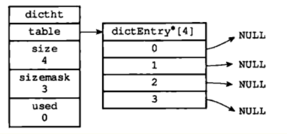

Redis是什么，用在哪
Redis 是一个使用 C 语言写成的，开源的 key-value 数据库，和 Memcached 类似，它支持存储的 value 类型相对更多，包括 string (字符串)、list (链表)、set (集合)、zset ( sorted set –有序集合)和 hash（哈希类型）。与memcached 一样，为了保证效率，数据都是缓存在内存中。区别的是 redis 会周期性的把更新的数据写入磁盘或者把修改操作写入追加的记录文件，并且在此基础上实现了 master-slave(主从)同步。
Redis 使用场景：
- 记录帖子点赞数、点击数、评论数；
- 缓存近期热帖；
- 缓存文章详情信息；
- 记录用户会话信息。
个人感觉Redis有2个作用，一个是缓存的作用，就是db中的热点数据缓存在其中。第二是对于那些数据结构简单，性能要求高、一致性要求低的数据，直接存入Redis，它也会持久化的。
Redis 的缺点
是数据库容量受到物理内存的限制,不能用作海量数据的高性能读写,因此 Redis 适合的场景主要局限在较小数据量的高性能操作和运算上。Redis 不具备自动容错和恢复功能
Redis内存模型
Redis是单线程的为什么速度那么快
完全基于内存，绝大部分请求是纯粹的内存操作，非常快速。数据存在内存中，类似于HashMap，HashMap的优势就是查找和操作的时间复杂度都是 O(1)；
数据结构简单，对数据操作也简单，Redis 中的数据结构是专门进行设计的；
采用单线程，避免了不必要的上下文切换和竞争条件，也不存在多进程或者多线程导致的切换而消耗 CPU，不用去考虑各种锁的问题，不存在加锁释放锁操作，没有因为可能出现死锁而导致的性能消耗；
使用多路 I/O 复用模型，非阻塞 IO；
使用底层模型不同，它们之间底层实现方式以及与客户端之间通信的应用协议不一样，Redis 直接自己构建了VM 机制 ，因为一般的系统调用系统函数的话，会浪费一定的时间去移动和请求；
那么为什么 Redis 是单线程？
因为 Redis 是基于内存的操作，CPU不是Redis的瓶颈，Redis 的瓶颈最有可能是机器内存的大小或者网络带宽。既然单线程容易实现，而且 CPU 不会成为瓶颈，那就顺理成章地采用单线程的方案了。多线程的话还需要考虑切换线程的损失，线程安全这些问题。
Redis功能
- 数据缓存功能
- 分布式锁的功能
- 支持数据持久化
- 支持事务
- 支持消息队列
Redis和memcache有什么区别
- 存储方式不同：
memcache把数据全部存在内存之中，断电后会挂掉，数据不能超过内存大小；Redis有部份存在硬盘上，这样能保证数据的持久性。 - 数据支持类型：
memcache对数据类型支持相对简单；Redis有复杂的数据类型。 - 使用底层模型不同：它们之间底层实现方式，以及与客户端之间通信的应用协议不一样，
Redis自己构建了vm机制，因为一般的系统调用系统函数的话，会浪费一定的时间去移动和请求。 - value 值大小不同：
Redis最大可以达到512mb；memcache只有1mb。
Redis和MySql的区别
- 类型上：从类型上来说，
mysql是关系型数据库，redis是缓存数据库 - 作用上：
mysql用于持久化的存储数据到硬盘，功能强大，但是每次请求访问数据库时，都存在着I/O操作，如果反复频繁的访问数据库会在反复链接数据库上花费大量时间，从而导致运行效率过慢并且也会导致数据库的负载过高，那么此时缓存的概念就衍生了出来；redis用于存储使用较为频繁的数据到缓存中，读取速度快 - 需求上：
mysql和redis因为需求的不同，一般都是配合使用
Redis 支持的数据类型有哪些？用在什么场景？
String
String数据结构是简单的key-value类型，value其实不仅可以是String，也可以是数字。 常规key-value缓存应用； 常规计数：微博数，粉丝数等。
Hash
Hash是一个string类型的field和value的映射表，hash特别适合用于存储对象。 比如我们可以Hash数据结构来存储用户信息，商品信息等等。
List
list就是链表，Redis list的应用场景非常多，也是Redis最重要的数据结构之一，比如微博的关注列表，粉丝列表，最新消息排行等功能都可以用Redis的list结构来实现。
Set
当你需要存储一个列表数据，又不希望出现重复数据时，set是一个很好的选择。在微博应用中，可以将一个用户所有的关注人存在一个集合中，将其所有粉丝存在一个集合。Redis可以非常方便的实现如共同关注、共同喜好、二度好友等功能。
Sorted Set
和set相比，sorted set增加了一个权重参数score，使得集合中的元素能够按score进行有序排列。在直播系统中，实时排行信息包含直播间在线用户列表，各种礼物排行榜，弹幕消息（可以理解为按消息维度的消息排行榜）等信息，适合使用Redis中的SortedSet结构进行存储。
Redis底层的数据结构
简单动态字符串（simple dynamic string）SDS
区别于 C 语言字符串，具有良好的伸缩性，在获取字符串长度，字符串修改，防止缓存区溢出等性能都比C语言字符串好，Redis 中定义动态字符串的结构：
1 | /* |
SDS 有专门用于保存字符串长度的变量，并且杜绝缓冲区溢出，因为 C 字符串不记录字符串长度，除了获取的时候复杂度高以外，还容易忘了为字符串重新分配足够的空间，从而导致缓冲区溢出。
多个链表节点组成的双端链表
数据结构：
1 | typedef struct list{ |
字典
字典，又称为符号表、关联数组或映射，是一种用于保存键值对的抽象数据结构。Redis 中构建了自己的字典实现。
例如
1 | SET msg "hello world" |
创建这样的键值对（“msg”，“hello world”）在数据库中就是以字典的形式存储
字典由哈希表和哈希表节点构成，一个空的字典的结构图如下：

我们可以看到，在结构中存有指向dictEntry 数组的指针，而我们用来存储数据的空间既是dictEntry
1 | typedef struct dictht { |
如果出现 hash 值相同的情况怎么办？Redis 采用了链地址法。
其次随着对哈希表的不断操作，哈希表保存的键值对会逐渐的发生改变，为了让哈希表的负载因子维持在一个合理的范围之内，我们需要对哈希表的大小进行相应的扩展或者压缩，这时候，我们可以通过 rehash（重新散列）操作来完成。Redis 采用渐进式rehash，它的好处在于它采取分而治之的方式，避免了集中式 rehash 带来的庞大计算量。
跳跃表
顾名思义，首先它是一个 list。看这个知道跳跃表是什么
它的查找的时间复杂度可以降低到O(log n)。但是对于新插入一个节点之后，就会打乱上下相邻两层链表上节点个数严格的 2:1 的对应关系。如果要维持这种对应关系，就必须把新插入的节点后面的所有节点（也包括新插入的节点）重新进行调整，这会让时间复杂度重新蜕化成O(n)。删除数据也有同样的问题。
后续 对这个有一个优化，它不要求上下相邻两层链表之间的节点个数有严格的对应关系，而是为每个节点随机出一个层数。
1 | typedef struct zskiplistNode { |
zset 用的是跳跃表和字典。字典用来查询数据到分数(score)的对应关系，而跳跃表用来根据分数查询数据。
MySQL里有2000w数据，Redis中只存20w的数据，如何保证Redis中的数据都是热点数据（redis有哪些数据淘汰策略？？？）
相关知识：redis 内存数据集大小上升到一定大小的时候，就会施行数据淘汰策略（回收策略）。redis 提供 6种数据淘汰策略：
volatile-lru：从已设置过期时间的数据集中挑选最近最少使用的数据淘汰volatile-ttl：从已设置过期时间的数据集中挑选将要过期的数据淘汰volatile-random：从已设置过期时间的数据集中任意选择数据淘汰allkeys-lru：从数据集中挑选最近最少使用的数据淘汰allkeys-random：从数据集中任意选择数据淘汰no-enviction：禁止驱逐数据
Redis采用的内存回收算法：引用计数法或者LRU算法。
Redis的并发竞争问题如何解决?
Redis为单进程单线程模式，采用队列模式将并发访问变为串行访问。Redis本身没有锁的概念，Redis对于多个客户端连接并不存在竞争，但是在Jedis客户端对Redis进行并发访问时会发生连接超时、数据转换错误、阻塞、客户端关闭连接等问题，这些问题均是由于客户端连接混乱造成。对此有2种解决方法：
- 客户端角度，为保证每个客户端间正常有序与
Redis进行通信，对连接进行池化，同时对客户端读写Redis操作采用内部锁synchronized。 - 服务器角度，利用
setnx实现锁。
Redis 热 key 问题
在你发现热 key 以后，把热 key 加载到系统的 JVM 中。针对这种热 key 请求，会直接从 jvm 中取，而不会走到redis 层。或者搭建 Redis 集群
Redis缓存穿透，缓存雪崩，缓存击穿
Redis 缓存的使用，极大的提升了应用程序的性能和效率，特别是数据查询方面。但同时，它也带来了一些问题。其中，最要害的问题，就是数据的一致性问题，从严格意义上讲，这个问题无解。如果对数据的一致性要求很高，那么就不能使用缓存。除此之外一些典型问题就是，缓存穿透、缓存雪崩和缓存击穿。
缓存穿透
缓存穿透，是指查询一个数据库一定不存在的数据。正常的使用缓存流程大致是，数据查询先进行缓存查询，如果key 不存在或者 key 已经过期，再对数据库进行查询，并把查询到的对象，放进缓存。如果数据库查询对象为空，则不放进缓存。
解决方案
有很多种方法可以有效地解决缓存穿透问题，最常见的则是采用布隆过滤器，将所有可能存在的数据哈希到一个足够大的 bitmap 中，一个一定不存在的数据会被 这个 bitmap 拦截掉，从而避免了对底层存储系统的查询压力。另外也有一个更为简单粗暴的方法（我们采用的就是这种），如果一个查询返回的数据为空（不管是数 据不存在，还是系统故障），我们仍然把这个空结果进行缓存，但它的过期时间会很短，最长不超过五分钟
缓存雪崩
在某一个时间段，缓存集中过期失效。特别是电商中。
解决方案
缓存失效时的雪崩效应对底层系统的冲击非常可怕。大多数系统设计者考虑用加锁或者队列的方式保证缓存的单线 程（进程）写，从而避免失效时大量的并发请求落到底层存储系统上。这里分享一个简单方案就时讲缓存失效时间分散开，比如我们可以在原有的失效时间基础上增加一个随机值，比如 1-5 分钟随机，这样每一个缓存的过期时间的重复率就会降低，就很难引发集体失效的事件。
缓存击穿
缓存击穿，是指一个 key 非常热点，在不停的扛着大并发，大并发集中对这一个点进行访问，当这个 key 在失效的瞬间，持续的大并发就穿破缓存，直接请求数据库，就像在一个屏障上凿开了一个洞。
解决方案
使用互斥锁 (mutex key)，简单地来说，就是在缓存失效的时候（判断拿出来的值为空），不是立即去 load db，而是先使用缓存工具的某些带成功操作返回值的操作（比如 Redis 的 SETNX 或者 Memcache 的 ADD）去set一个mutex key，当操作返回成功时，再进行 load db 的操作并回设缓存；否则，就重试整个 get 缓存的方法。
怎么保证缓存和数据库数据的一致性
- 合理设置缓存的过期时间。
- 新增、更改、删除数据库操作时同步更新
Redis，可以使用事务机制来保证数据的一致性。
缓存技术
Redis持久化方式
Redis 有两种持久化的方式：快照（RDB 文件）和追加式文件（AOF 文件）
- RDB 持久化方式会在一个特定的间隔保存那个时间点的一个数据快照。
- AOF 持久化方式则会记录每一个服务器收到的写操作。在服务启动时，这些记录的操作会逐条执行从而重建出原来的数据。写操作命令记录的格式跟 Redis 协议一致，以追加的方式进行保存。
- Redis 的持久化是可以禁用的，就是说你可以让数据的生命周期只存在于服务器的运行时间里。
- 两种方式的持久化是可以同时存在的，但是当 Redis 重启时，AOF 文件会被优先用于重建数据。
RDB
工作原理：
- Redis 调用 fork() ，产生一个子进程。
- 子进程把数据写到一个临时的 RDB 文件。
- 当子进程写完新的 RDB 文件后，把旧的 RDB 文件替换掉。
优点：
- RDB 文件是一个很简洁的单文件，它保存了某个时间点的 Redis 数据，很适合用于做备份。你可以设定一个时间点对 RDB 文件进行归档，这样就能在需要的时候很轻易的把数据恢复到不同的版本。
- 基于上面所描述的特性，RDB 很适合用于灾备。单文件很方便就能传输到远程的服务器上。
- RDB 的性能很好，需要进行持久化时，主进程会 fork 一个子进程出来，然后把持久化的工作交给子进程，自己不会有相关的 I/O 操作。
- 比起 AOF，在数据量比较大的情况下，RDB 的启动速度更快。
缺点：
- RDB 容易造成数据的丢失。假设每 5 分钟保存一次快照，如果 Redis 因为某些原因不能正常工作，那么从上次产生快照到 Redis 出现问题这段时间的数据就会丢失了。
- RDB 使用 fork() 产生子进程进行数据的持久化，如果数据比较大的话可能就会花费点时间，造成 Redis 停止服务几毫秒。如果数据量很大且 CPU 性能不是很好的时候，停止服务的时间甚至会到 1 秒。
AOF
快照并不是很可靠。如果你的电脑突然宕机了，或者电源断了，又或者不小心杀掉了进程，那么最新的数据就会丢失。而 AOF 文件则提供了一种更为可靠的持久化方式。每当 Redis 接受到会修改数据集的命令时，就会把命令追加到 AOF 文件里，当你重启 Redis 时，AOF里的命令会被重新执行一次，重建数据。
优点：
- 比 RDB 可靠。
- 当 AOF 文件太大时，Redis 会自动在后台进行重写。重写很安全，因为重写是在一个新的文件上进行，同时Redis 会继续往旧的文件追加数据。
- AOF 把操作命令以简单易懂的格式一条接一条的保存在文件里，很容易导出来用于恢复数据。
缺点
- 在相同的数据集下，AOF 文件的大小一般会比 RDB 文件大。
- 在某些 fsync 策略下，AOF 的速度会比 RDB 慢。通常 fsync 设置为每秒一次就能获得比较高的性能，而在禁止fsync 的情况下速度可以达到 RDB 的水平。
- 在过去曾经发现一些很罕见的 BUG 导致使用 AOF 重建的数据跟原数据不一致的问题。
Redis集群
Redis 集群是一个可以在多个 Redis 节点之间进行数据共享的设施。Redis 集群通过分区来提供一定程度的可用性： 即使集群中有一部分节点失效或者无法进行通讯， 集群也可以继续处理命令请求。
Redis 集群使用数据分片而非一致性哈希来实现： 一个 Redis 集群包含 16384 个哈希槽， 数据库中的每个键都属于这 16384 个哈希槽的其中一个， 集群使用公式 CRC16(key) % 16384 来计算键 key 属于哪个槽， 其中 CRC16(key) 语句用于计算键 key 的 CRC16 校验和 。
集群中的每个节点负责处理一部分哈希槽， 举个例子：
1 | 一个集群可以有三个哈希槽， 其中： |
主从复制和一致性保证
为了使得集群在一部分节点下线或者无法与集群的大多数节点进行通讯的情况下， 仍然可以正常运作， Redis 集群对节点使用了主从复制功能： 集群中的每个节点都有 1 个至 N 个复制品， 其中一个复制品为主节点， 而其余的 N-1 个复制品为从节点。
主从复制存在问题：一旦 主节点宕机，从节点晋升成主节点，同时需要修改应用方的主节点地址，还需要命令所有从节点去复制新的主节点，整个过程需要人工干预。
Redis 并不能保证数据的强一致性. 这意味这在实际中集群在特定的条件下可能会丢失写操作：第一个原因是因为集群是用了异步复制。写操作过程:
- 客户端向主节点 B 写入一条命令.
- 主节点 B 向客户端回复命令状态.
- 主节点将写操作复制给他得从节点 B1, B2 和 B3
集群是如何判断是否有某个节点挂掉
每一个节点都存有这个集群所有主节点以及从节点的信息。它们之间通过互相的 ping-pong 判断是否节点可以连接上。如果有一半以上的节点去 ping 一个节点的时候没有回应，集群就认为这个节点宕机了，然后去连接它的备用节点。
集群进入fail状态的必要条件
- 某个主节点和所有从节点全部挂掉，我们集群就进入 faill 状态。
- 如果集群超过半数以上 master 挂掉，无论是否有 slave，集群进入 fail 状态.
- 如果集群任意 master 挂掉,且当前 master 没有 slave.集群进入 fail 状态
Redis 哨兵
哨兵是一个管理多个 Redis 实例的工具，它可以实现对 Redis 的监控、通知、自动故障转移。
它的作用
1）监控：哨兵会不断地检查你的 Master 和 Slave 是否运作正常。
2）提醒：当被监控的某个 Redis 节点出现问题时, 哨兵可以通过 API 向管理员或者其他应用程序发送通知。（使用较少）
3.）自动故障迁移：当一个 Master 不能正常工作时，哨兵会开始一次自动故障迁移操作。具体操作如下：
（1）它会将失效 Master 的其中一个 Slave 升级为新的 Master, 并让失效 Master 的其他 Slave 改为复制新的 Master。
（2）当客户端试图连接失效的 Master 时，集群也会向客户端返回新 Master 的地址，使得集群可以使用现在的 Master 替换失效 Master。
（3）Master 和 Slave 服务器切换后，Master 的 redis.conf、Slave 的 redis.conf 和sentinel.conf 的配置文件的内容都会发生相应的改变，即 Master 主服务器的 redis.conf 配置文件中会多一行 slaveof 的配置，sentinel.conf 的监控目标会随之调换。
工作方式
每个哨兵进程以每秒钟一次的频率向整个集群中的 Master 主服务器，Slave 从服务器以及其他哨兵进程发送一个 PING 命令。
如果一个实例距离最后一次有效回复 PING 命令的时间超过 down-after-milliseconds 选项所指定的值， 则这个实例会被哨兵进程标记为主观下线。
如果一个 Master 主服务器被标记为主观下线，则正在监视这个 Master 主服务器的所有哨兵进程要以每秒一次的频率确认 Master 主服务器的确进入了主观下线状态。
当有足够数量的哨兵进程（大于等于配置文件指定的值）在指定的时间范围内确认 Master 主服务器进入了主观下线状态， 则 Master 主服务器会被标记为客观下线。
在一般情况下， 每个 哨兵进程会以每 10 秒一次的频率向集群中的所有Master 主服务器、Slave 从服务器发送 INFO 命令。
当 Master 主服务器被哨兵进程标记为客观下线时，哨兵进程向下线的 Master 主服务器的所有 Slave 从服务器发送 INFO 命令的频率会从 10 秒一次改为每秒一次。
若没有足够数量的哨兵进程同意 Master 主服务器下线， Master 主服务器的客观下线状态就会被移除。若 Master 主服务器重新向哨兵进程发送 PING 命令返回有效回复，Master 主服务器的主观下线状态就会被移除。